01
ELESPACIO
Impresión inicial
A primera vista, ELESPACIO se percibe como una página limpia pero original. La web te recibe con un fondo negro que hace resaltar una paleta variada de colores, sin llegar a ser demasiado brillantes, lo que mantiene una sensación de cohesión visual. Las formas redondeadas de los botones, junto con los vídeos y las transiciones animadas, refuerzan la idea de que ELESPACIO es un sitio creativo, pero que al mismo tiempo transmite profesionalidad y seriedad en su trabajo. La razón por la que se decidió analizar esta página es que entra en lo que sería tradicionalmente una página web bien diseñada: es moderna, interactiva, tiene una buena composición y, para este análisis, quería tener una variedad de estilos y de webs.
* Haz hover sobre los bloques para ver capturas relacionadas.
Diseño visual
Paleta de color
Esta paleta negra más arcoíris neutralizado hace que la página nunca se vea aburrida, pero que no sea demasiado a la mirada gracias al tono.
Tipografía y jerarquía
Tiene una tipografía clara, en donde los títulos tienen un bold muy reconocible y propio, ya que es tipo bold pero con serifa. Más allá de eso, el espaciado da bastante aire para los párrafos grandes que tienen. Esto deja una jerarquía visual clara.
Uso del espacio
Se debe tomar en cuenta que, aunque hayan párrafos muy grandes, gracias a que hay muchas animaciones de scroll en el viewport nunca se encuentra nada más que un párrafo y alguna imagen de apoyo, o distintas imágenes y una pequeña oración, haciendo que nunca se sienta cargada.
Identidad visual
Su imagen queda muy clara. Es una página coherente con alusión a símbolos de la cultura pop, por ejemplo el látex, musculatura y cowboys, dejando muy en claro su aire de compañía moderna.
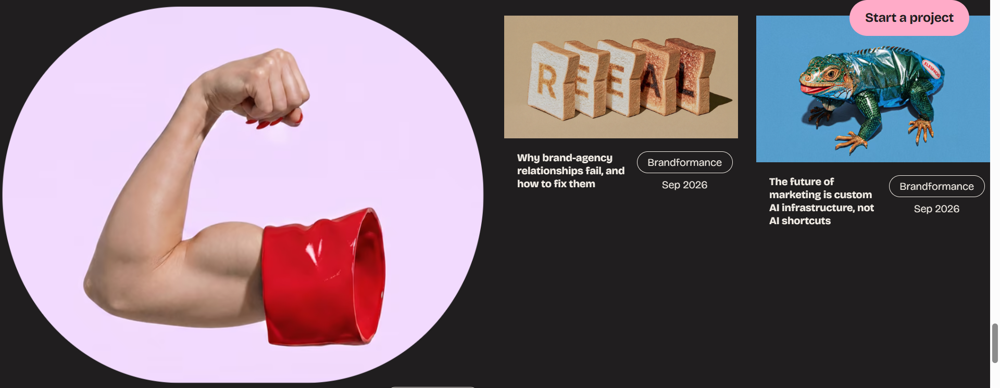
Composición y navegación
Composición
La composición está muy bien organizada. Se empieza con un portafolio de los trabajos de ELESPACIO, luego explican qué hacen y cómo lo hacen, después muestran empresas específicas con las que han trabajado para dar fiabilidad y finalmente dejan sus contactos.
Secciones y scroll
Cada sección toma prácticamente una página completa y el cambio de una a otra se nota muy claramente por dos razones. Primero, el fondo cambia de color, pasando de negro a rosa o incluso a crema. Además, como se utiliza mucho scroll animation, se siente como si hicieras scroll dentro de un mismo sitio en el que van pasando carruseles verticales hasta que esa parte termina y entonces realmente pasas a la siguiente sección. Esto hace que el cambio entre una sección y otra sea muy claro.
CTA
Los CTA destacan muy bien porque siempre hacen contraste con la paleta. Si el fondo es completamente negro, los botones utilizan color; y si hay muchos colores alrededor, los CTA pasan a ser blancos. Esto hace que se identifiquen fácilmente.
Navegación
Como punto negativo, el menú sticky se pierde un poco al principio y no es hasta que bajas cuando notas realmente que está ahí. Siento que, si apareciera después de hacer scroll, quedaría incluso más claro y tendría más sentido dentro de la navegación.
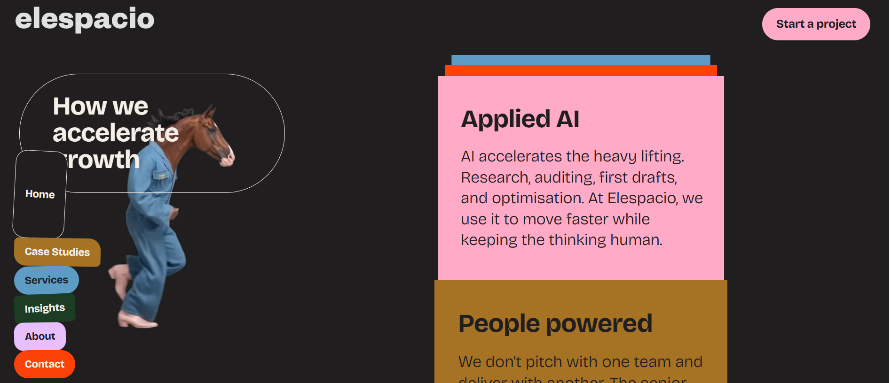
Parte técnica
Responsive
En su parte responsive está bastante bien. El carrusel vertical sigue funcionando y las animaciones de apoyo siguen ahí. Sí es cierto que en el apoyo visual de los trabajos se pierde bastante en presentación y dinamismo, ya que se añade una sección de trabajos en donde aparece un carrusel de foto y descripción, pero sigue funcionando bien.
Accesibilidad
De las páginas analizadas esta en definitiva no es la mas accesible de todas. Por dos factores principales, el primero siendo su paleta dan variada de colores, colores que pueden no ser visibles para algunos tipos de daltonismo. Más allá de eso, la página puede resultar levemente cargada para algunos usuarios sensibles a tanto ruido visual. Aunque esto es lo que la vuelve tan llamativa, ver tantas animaciones, colores e ilustraciones tan seguidas una de la otra puede resultar dificil de majerar para algunos usuarios.
En general no se pierde información y, aunque se ve menos interactiva, funciona bien. Es claro su esfuerzo por mantener su escencia ya que cuando se mantiene presionado en una foto, esta se redondea igual que en el ordenador, aunque sea un detalle no necesario.
Rendimiento y carga
La página utiliza bastantes imágenes, animaciones y contenido multimedia, incluyendo vídeos integrados. Esto hace que visualmente tenga mucho más movimiento y personalidad, aunque también supone que la web tiene más elementos que cargar que una página sencilla. Aun así, durante la navegación no se siente que estos recursos rompan la experiencia.
SEO y estructura
A nivel de estructura, la página está bastante bien organizada para que tanto el usuario como los buscadores entiendan el contenido. Existe un título principal claro y después se utilizan distintos niveles de títulos html para separar conceptos, servicios y contenido. Además, los enlaces del menú tienen nombres descriptivos como Case Studies, Services, Insights, About y Contact, en vez de utilizar textos ambiguos.
Iframe
Un detalle técnico que resaltar en el análisis es que ELESPACIO bloquea que su página pueda mostrarse dentro de un iframe externo. Esto no afecta su funcionamiento pero pierden oportunidades de ser mencionados en otras paginas directamente como es aqui el caso.
Conclusión
En general, ELESPACIO consigue verse como una página limpia pero original. La paleta negra con colores neutralizados, la tipografía y el espaciado hacen que nunca se sienta demasiado cargada, aunque tenga bastante contenido.
Su identidad queda muy clara gracias a las alusiones a la cultura pop, las animaciones y una composición bien organizada. ELESPACIO demuestra su marca muy bien, de una manera que baila entre lo autentico y el trabajo serio
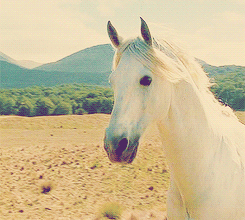
02
CLOUDSTUDIO
Impresión inicial
Al principio no se nota del todo qué es Cloudstudio y puede dejar un poco confundido al usuario, ya que simplemente te dice “escoge tu conductor: este sitio está despierto” y después aparecen opciones de diferentes cosas parecidas motas o bolitas que son los drivers. Escogí Cloudstudio especfic por estos drivers. Me parece una idea muy nueva y creativa de incluir la IA y la identidad de la marca. Esto me llamó la atención lo suficiente como para analizar más a fondo cómo los utilizaban durante toda la navegación de la página.
Ya cuando entras en la página empieza a tener más sentido, porque es un sitio que vende aplicaciones o servicios de IA, entonces esta automatización a través del “chofer” encaja con lo que hace la empresa. Me parece una metáfora divertida e inteligente para mostrar la página y presentar desde el inicio una experiencia más interactiva.
* Haz hover sobre los bloques para ver capturas relacionadas.
Diseño visual
Paleta de color
La paleta de colores depende parcialmente de las elecciones del usuario. Parte de la página se verá del mismo color que el driver que se elija, y este irá siempre en conjunto con blanco y negro. Es una paleta simple, pero se va variando la combinación de estos tres colores para demostrar cómo se cambia de sección.
Tipografía y jerarquía
La tipografía es casi un sans serif, pero en algunos casos se redondea más o tiene algún detalle en alguna letra, dando así la sensación de una página futurista pero no completamente corporativa y seria.
Uso del espacio
En general, la página deja mucho espacio entre todo. No hay ningún texto inmenso y usualmente cualquier texto se empareja con ilustraciones animadas, lo que hace que el contenido se sienta ligero y no demasiado cargado.
Identidad visual
También hay alusión al destello típico de muchas páginas de IA, reforzando esa estética tecnológica y futurista que tiene la página.
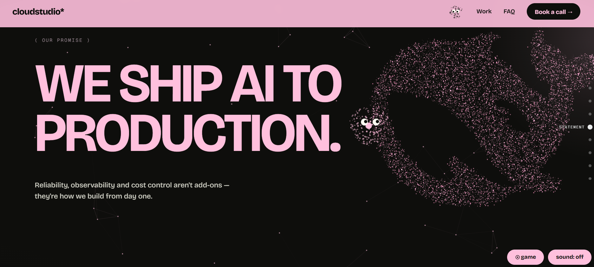
Composición y navegación
Concepto de los drivers
Me parece que todo el concepto de los drivers es muy interesante. Creo que este es un aspecto clave para el mensaje de Cloudstudio, ya que lo que ofrecen son servicios de IA a otras empresas, automatizando sistemas y, en sí, haciendo el trabajo más fácil a través de la ayuda de la IA.
El hecho de que desde el primer momento tengas este ayudante que te vaya dando un “tour” de la página y respondiendo preguntas es realmente muy interesante para el concepto que quieren vender.
Navegación entre secciones
Más allá de esta guía que ofrece el driver, hay un cambio obvio entre secciones gracias a los colores. Esto hace que, aunque la página sea bastante simple, siga siendo fácil orientarse y entender cuándo se pasa de una parte a otra.
CTA
No tienen los mejores CTA dada la paleta hiperminimalista, pero sí se notan por su forma redondeada, lo que ayuda a distinguirlos del resto de elementos.
Usabilidad y accesibilidad
Hay un buen equilibrio entre lo experimental que es la página y que realmente sea usable. Igualmente, los drivers son opcionales para las personas que necesiten ir más lento, por lo que además pueden funcionar como un punto de accesibilidad.
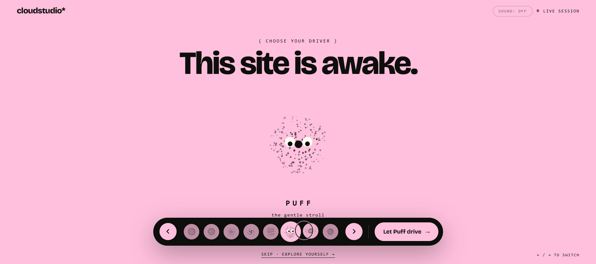
Parte técnica
Responsive
Es una página prácticamente perfectamente responsive, ya que no se pierde casi nada durante el cambio a una pantalla más pequeña. Es literalmente la misma página, pero acomodada de una forma más estrecha. Las secciones siguen funcionando igual y algunas animaciones que en ordenador se activan con el scroll pasan a funcionar al tocar la pantalla. Incluso el código contempla específicamente dispositivos sin hover y adapta algunos de estos efectos.
Accesibilidad
Es una página sencilla de seguir, se tiene la opcion de desactivar el driver para que este no sea distractivo o tal vez si va demasiado rápido para ir a un ritmo propio. Como el color del driver define el "pop" de color de la página este se puede personalizar a el que mejor le funcione a distintos usuarios.
Mi único punto en contra sería que algunas de las ilustraciones animadas se cortan un poco antes de poder verlas bien, ya que la página funciona por secciones o “pestañas” que en algunos casos aparecen demasiado pronto.
Funcionamiento del driver
En cuanto a su funcionamiento más técnico, mascot.js es el archivo encargado de controlar el sistema relacionado con el driver y su guía dentro de la página. Lo que significa que es Javascript y por ende conlleva logica y programación adentro en vez de ser solo decoración. La web utiliza localStorage para guardar datos como el tema y el driver elegido, permitiendo mantener la elección del usuario y cambiar la apariencia de la página según esta.
El driver tampoco es un elemento estático. Cuando se hace hover sobre la mascota, el cursor cambia a “talk”, indicando que se puede interactuar con ella, este contesta preguntas que ademas guarda en su memoria local
Por último, un detalle bastante importante es que existe un timeout como plan secundario. Si la pantalla inicial de selección del driver no carga, después de 6 segundos se manda directamente a la página principal. De esta forma, un fallo en esta función, muy interesante pero no necesaria, no deja al usuario atrapado al entrar en la web.
Conclusión
En general, Cloudstudio consiguió diseñar una página bastante experimental que a la vez sigue siendo clara y usable. El concepto de los drivers es probablemente su punto más fuerte, ya que no funciona solo como decoración, sino que conecta directamente con la idea de automatización e IA que vende la empresa.
Visualmente mantiene una identidad muy coherente gracias a su paleta (blanco, negro y opción de usuario), la tipografía sans serif con una pizca de carácter y las ilustraciones animadas. Además, la versión responsive conserva casi toda la experiencia de escritorio, algo especialmente importante en una web con tanta interacción.
Aunque algunas de sus animaciones no se ven perfectamente bien en el móvil y los CTA no tienen ese efecto tan obvio de llamar a hacer algo, la página mantiene un buen equilibrio entre creatividad, tecnología y usabilidad.
03
TIAGO FRAGOSO
Impresión inicial
Para vivir la experiencia completa de esta página hay que, primero que todo, tener sonido en el dispositivo desde donde se esté viendo.
Es una página muy interesante, ya que todo parece estar dibujado a mano y es casi como estar viendo una fotocopia de un sketchbook en digital. Es un sitio verdaderamente muy interactivo y con muchas cosas que ver.
Este es el portafolio personal de Tiago Fragoso, en donde hace un muy buen trabajo demostrando su originalidad y sus ideas frescas.
Escogí la página de Tiago Fragoso porque me llamó mucho la atención esta clase de creación *mixed media*, en donde el diseño web se mezcla con arte visual físico, como lo son sus sketches. Me llaman mucho la atención estas páginas que tienen algo nuevo que ofrecer o, en general, ideas que no se encuentran todos los días.
* Haz hover sobre los bloques para ver capturas relacionadas.
Diseño visual
Paleta de color
La página utiliza una paleta bastante simple. Como busca parecer un sketchbook, prácticamente todo se construye a partir de blanco y líneas negras.
Tipografía
En cuanto a la tipografía, no utiliza una tipografía como tal, ya que todo ha sido creado por Tiago. Es literalmente su propia escritura, que luego se extrae y se utiliza en botones, imágenes y otros elementos de la página.
Identidad visual
La estética que intenta utilizar queda muy clara: otra vez, la idea de un sketchbook. Al final, lo que quiere demostrar es que es una persona creativa que lleva las ideas desde su sketchbook hasta las cosas que hace realmente en la vida real.
Esto es también lo primero que aparece al entrar a la página, con un vídeo de las cosas en las que ha participado.
Organización e ilustraciones
En general, todo está muy bien organizado. Es levemente desordenado, pero como lo sería un cuaderno común y corriente. Aun así, todo sigue siendo legible y coherente.
En cuanto a las ilustraciones, aparece una especie de mini autorretrato y también botones ilustrativos. Todo se siente bastante original y hasta divertido, mostrando una forma muy llevadera de construir la página.
Sonido e interacción
Algo que llama muchísimo la atención es el uso de los sonidos. La mayoría de los botones tienen un hover acompañado de algún sonido extraño o gracioso.
Esto también muestra bastante bien la manera propia de ser de Tiago. Al trabajar como freelancer, la página refleja una forma de crear que va un poco en contra de las normas típicas del diseño y muestra una personalidad creativa y única.
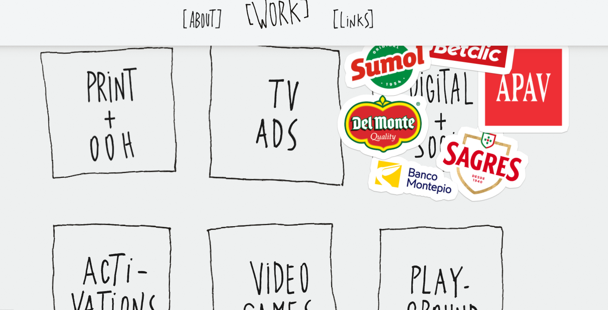
Composición y navegación
Estructura
Es una página bastante pequeña, por lo que tiene una organización muy sencilla. Primero aparece un vídeo introductorio y después se divide prácticamente en tres partes: sus trabajos, una introducción sobre él y finalmente los enlaces para encontrarlo en otras páginas.
En cuanto a navegación, realmente no tiene nada especialmente complejo. Lo interesante no está tanto en la estructura, sino en la manera en la que toda la página está montada visualmente.
Botones e interacción
Los botones son súper claros y mantienen todos el mismo diseño. Aparecen enmarcados por dos símbolos similares a corchetes y, al hacer hover, aumentan de tamaño y pueden activar un sonido u otro pequeño efecto. Esto hace que sean fáciles de reconocer durante toda la página.
Uso del sonido
El sonido no distrae durante la navegación, pero tampoco es algo necesario para poder utilizarla. Funciona más bien como un detalle interesante que hace que la página sea fácil de recordar incluso después de salir de ella.
Orden y usabilidad
Aunque visualmente es una página claramente desordenada, lo hace de una manera completamente usable y funcional. Todo se encuentra fácilmente y sigue siendo bastante nítido dentro de ese desorden.
Además, cuenta con un menú sticky que permite encontrar las distintas partes de la página con mayor facilidad.
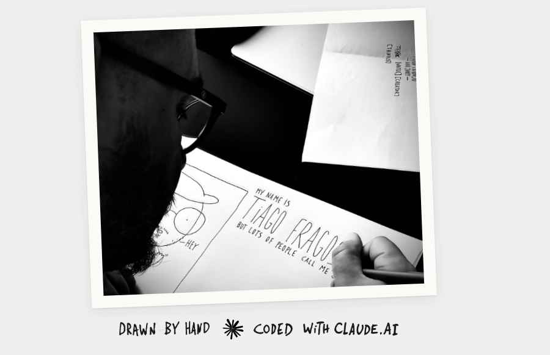
Parte técnica
Uso de IA en el desarrollo
Toda la página fue escrita con Claude. Tiago explica que primero creó los elementos a mano y después utilizó la IA para desarrollar la parte de código. Todo esta dibujado a mano y luego Claude se encargo de hacerlo funcionar.
SEO y estructura
En cuanto al Search Engine Optimization (SEO), la página está muy bien planteada. Todo está correctamente marcado y organizado a nivel de estructura, Tiago probablemente entienda de estos conceptos apesar de no ser su area y le pidio a Claude a afinarlos.
Accesibilidad
Es una página perfectamente accesible para la mayoria de imparidades mas comúnes. Tiene botones grandes, no hay muchas animaciones que distraigan mucho o demasiadas a la vez. La paleta monocromatica también hace que esta sea facil de leer con algunos problemas de vista y lo bien demarcada que esta para el SEO hace que en un text to speech se pueda leer muy bien.
Responsive
Al entrar desde un móvil, la propia página avisa de que la experiencia se disfruta mejor en una pantalla más grande, aunque permite ignorar este aviso y continuar igualmente.
En general, la página sigue funcionando bastante bien en móvil. No cambia mucho con respecto al ordenador, los elementos no se reorganizan, si no que se achican hasta caber en su tamaño original dentro del móvil. Por esta razón, pueden verse varios bloques a la vez, pero todos a un tamaño menor.
Interacción en móvil
También cambia la manera en la que funcionan algunas interacciones. Ya que no se puede utilizar hovers, cada vez que se da click a un botón este hace la animación que haría durante el hover y ya luego manda a donde deberia.
Conclusión
En general, la página de Tiago Fragoso consigue representar muy bien su personalidad y su manera tan unica de pensar. La estética de sketchbook, la manera en la que toda la página esta dibujada a mano, los sonidos graciosos y todos los demas elementos que demuestran su creatividad y su pasión por crear. Todos estos elementos vuelven al sitio uno memorable
Aunque visualmente parece desordenada a proposito, toda la página mantiene un orden claro y es completamente usable.
Aunque no tenga la mejor responsive, la experiencia sigue siendo buena, igualmente el mismo advierte de esto por lo que aquellos que estan verdaderamente interesados probablemente la terminen disfrutando en ordenador.
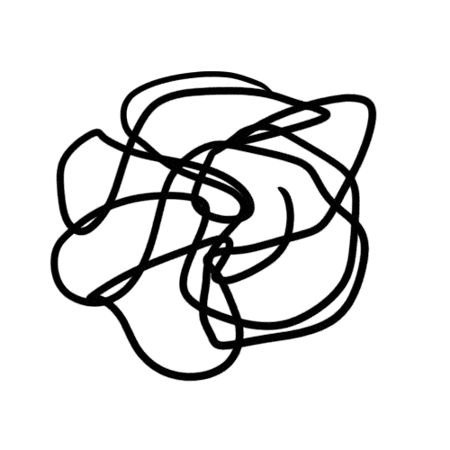
04
TAKE A WALK ON THE WILD SIDE
Impresión inicial
Take a Walk on the Wild Side es una página completamente distinta a lo habitual. A primera vista puede parecer que algo está mal o que dejó de funcionar pero realmente esa es la intención del diseño.
La página se sale completamente de cualquier esquema tradicional y precisamente eso es lo que más llama la atención. Probablemente es la menos usable de las cuatro, pero también una de las más únicas que haya visto.
Visualmente funciona casi como un boletín informativo mezclado con un collage y todo en movimiento. Al principio, nada tiene sentido, todo choca, pero de poco a poco se empieza a entener que es esa justamente la intención de la página.
Escogí Take a Walk on the Wild Side por cuánto me sorprendió su diseño. Encontré esta página buscando webs brutalistas y me parece que es directamente arte. Nunca había visto una página así, para bien y para mal. Considero que es una página que puede poner al usuario un poco incómodo o nervioso por su manera tan descombinada, pero creo que ese es exactamente el punto. También creo que es importante analizar páginas no convencionales para añadir ideas distintas.
* Haz hover sobre los bloques para ver capturas relacionadas.
Diseño visual
Paleta de color
La página utiliza un fondo blanco, algo prácticamente necesario para poder distinguir el texto de los demas elementos. La mayoria de la composición está formada por un collage de fotografías, normalmente en diferentes tonos de verde, terracota y otros colores bastante naturales.
Tipografía
La tipografía es completamente sans serif y genera bastante contraste con el collage tan colorido y orgánico. Es una letra seria que crea una yuxtaposición muy interesante entre ambos estilos.
Jerarquía visual y composición
Realmente no existe una jerarquía visual muy clara. El collage ocupa gran parte de la pantalla y toda interacción se hace atraves del menú. El espacio está sumamente sobreexplotado , toda la pantalla está en todo momento ocupada por imágenes y elementos, haciendo que la página se sienta muy caótica y conglomerada.
Coherencia visual
No existe coherencia visual y no se sigue ninguna regla tradicional del diseño, pero esto es justamente lo que busca Take a Walk on The Wild Side, una obra web de arte que a la vez tiene un fin informativo para el show de arte que promociona y representa.
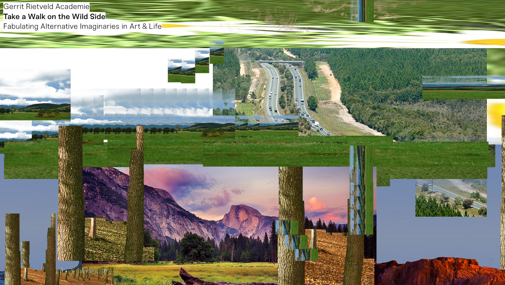
Composición y navegación
Movimiento e interacción
Uno de los aspectos más interesantes de la página es que prácticamente nunca está quieta. Las imágenes que forman el collage reaccionan al movimiento del ratón de una manera que realmente parece especial y única: cuando el cursor se mueve de arriba a abajo, se desplazan únicamente las imágenes del collage(también verticalmente) y cuando se mueve de izquierda a derecha, se desplaza horizontalmente únicamente el bloque de texto que se está viendo en ese momento. Esto da una sensación que nunca habia visto antes como si la web "respirara" lo que va muy bien con su nombre que hace alusión a la naturaleza.
Navegación horizontal
La web tampoco sigue una navegación tradicional. No se recorre de arriba hacia abajo como una web normal, si no que se desplaza de manera horizontal. Además, el scroll en si no funciona, se debe de utilizar el menú para todo, este es un apoyo importante ya que es facil perderse en una página tan conglomerada y además de scroll horizontal. Ya que el scroll es horizontal, otro apoyo que se usa en la navegación es el uso de una barra vertical que se mueve atravez del viewport según se va avanzando, ayudando tambien a que el usuario no se pierda en su progreso.
Composición
La cantidad de texto depende mucho de la parte del menú que se este viendo, hay algunas con un par de oraciones y otras en donde hay que hacer un scroll tradicional para verlo todo. En cuanto a la composición, esta no existe en absoluto, pero como mencionado anteriormente, se usan herramientas para ayudar a que este caos sea comodo o levemente usable, lo que demuestra que esta falta de composición es completamente intencional.
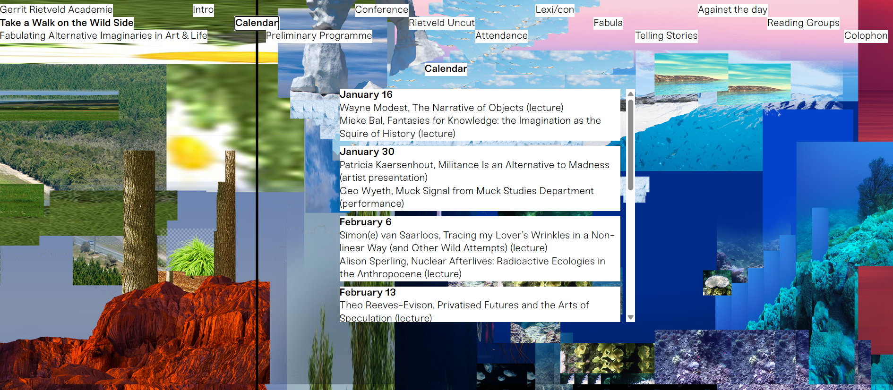
Parte técnica
Código y estructura
A diferencia de las páginas anteriores, resulta mucho más difícil estudiar técnicamente esta web desde su código fuente. Gran parte del contenido depende de JavaScript y el HTML inicial prácticamente solo indica que la página necesita JavaScript para funcionar. Esto hace que sea más complicado analizar directamente cómo está construida o utilizarla como referencia técnica.
Responsive
En cuanto al responsive, funciona bastante bien. Como la página ya es caótica en ordenador, en móvil sigue manteniendo esta misma sensación
El menú permanece en la izquierda superior y no es stikcy, y solamente con este se puede navegar la página. Luego dentro de cada una de las secciones, la navegación pasa a ser un scroll normal de móvil. El mayor problema con esto es que si el scroll era muy largo, hay que volver scrolleando hacía arriba hasta encontrar el menú de nuevo para cambiar de sección, lo que puede llegar a ser tedioso.
Rendimiento
A pesar de utilizar una gran cantidad de imágenes y elementos que estan en constante reacción, el rendimiento es bastante bueno. Durante la navegación no se perciben esperas importantes y el contenido carga de manera fluida.
Accesibilidad
La accesibilidad es uno de los puntos más claramente débiles de la página. La gran cantidad de elementos superpuestos, el movimiento constante y la falta de una jerarquía visual son una combinación potente a que muchos usuarios tengan dificultad para leer, comprender o seguir el contenido.
Conclusión
En general, Take a Walk on the Wild Side es probablemente la página más experimental de las cuatro. Desde el primer momento rompe con prácticamente todas las reglas tradicionales de diseño y navegación, utilizando un collage en constante movimiento, una composición muy congestionada y una navegación horizontal que hacen que la experiencia sea completamente distinta a una web convencional.
La página en ningún momento no intenta ser neutra ni universal, sino transmitir una identidad muy concreta y funcionar casi como una pieza artística en sí misma.
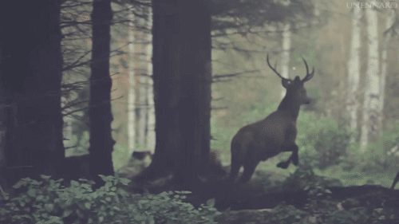
B
REFERENCIAS
Fuentes de análisis
Awwwards. (s. f.). Awwwards. https://www.awwwards.com/
Nielsen, J. (1994). 10 usability heuristics for user interface design. Nielsen Norman Group. https://www.nngroup.com/articles/ten-usability-heuristics/
World Wide Web Consortium. (2023). Web Content Accessibility Guidelines (WCAG) 2.2. https://www.w3.org/WAI/standards-guidelines/wcag/
Webs analizadas
ELESPACIO. (s. f.). ELESPACIO. https://www.elespacio.net/
Cloudstudio. (s. f.). Cloudstudio. https://cloudstudio.es/
Fragoso, T. (s. f.). Tiago Fragoso. https://tiagofragoso.com/
Gerrit Rietveld Academie. (2019). Take a Walk on the Wild Side. https://takeawalkonthewildside.rietveldacademie.nl/